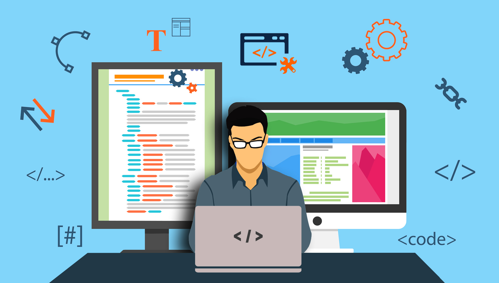

Погляд в майбутнє: навіщо вивчати програмування
Причин для вивчення більше, ніж здається на перший погляд. З розвитком інформаційних систем і технологій світ все більше потребує програмістів. За даними Бюро статистики праці США, в країні в наступному десятилітті відкриють 1,4 млн вакансій, пов’язаних з програмуванням. І всього 400 000 з них зможуть закрити. Крім того, в США позиції, пов’язані з програмуванням, постійно знаходяться в топі рейтингу робіт. Якщо розглядати Європу та Україну, то ситуація дуже схожа. Звичайно, в українському IT-секторі є багато інших завдань з розвитку та росту індустрії. Але питання появи та виховання нових кадрів залишається актуальним для всього ринку. Де їх взяти?
Для чого вивчати програмування
Онлайн-платформа Tynker.com з вивчення програмування називає чотири причини заохочувати інтерес до IT: розвиток креативності; розвиток експериментальної жилки; розвиток навички задіяти в процесах обидві півкулі мозку; підняття впевненості при створенні чогось нового.
Програмування складне?
Найпоширеніший міф про програмування – програмування потребує величезних інтелектуальних можливостей. Щоб почати писати код, не треба бути мудрішим за Соломона: достатньо мати мотивацію, інтерес і дисципліну. Якщо Ви відкриті для нового і готові застосовувати набуті навички на практиці, то, безперечно, навчитеся програмувати. Допоможе Вам, наприклад, інтенсив “Засади програмування”, який за 2 години дасть базову теорію, необхідну для розуміння основних сучасних мов програмування, і перший досвід написання програми. Проте складні задачі також потребують знань зі специфічних галузей.
Однак у мене не дуже добре з математикою, а її в усіх ВНЗ повно…
Наступна помилка полягає в тому, що знання математики – предмет першої необхідності для програмістів. Насправді для програмування достатньо знати базові поняття з курсу шкільної математики, але тільки спершу: подальше ускладнення задач може потребувати знання тонкощів певної предметної галузі. Наприклад, для верстання сайтів або написання мобільних додатків Вам вистачить і тих знань, які Ви здобули в школі. Проте для Data Science і наукового програмування потрібні знання зі статистики, теорії ймовірності й матаналізу, які осягнути самостійно вже складніше, до того ж слід пам’ятати, що велику частину складних задач вже розв’язали, Вам залишилось тільки використати їх.
А мені ще / вже X років, певно, рано / пізно починати?
Усупереч закоренілим стереотипам, не можна бути надто старим або надто молодим для програмування. Все залежить від того, чи здатні Ви навчатися. Звичайно, фізіологія впливатиме на Ваші успіхи, але завзятість може компенсувати недоліки, як і ретельний добір матеріалів для навчання.

А ще я дівчина…
Дивно чути, що жінкам не місце в програмуванні, в той час, як першим програмістом була жінка, Ада Лавлейс, яка склала набір інструкцій для обчислення чисел Бернуллі на машині Беббіджа. Звичайно, жінка, яка воліє присвятити себе програмуванню, має бути готовою до скептичних посмішок колег-чоловіків і критично налаштованого суспільства в цілому: “не жіноча це справа!”. Проте немає жодних об’єктивних причин, через які жінці не можна стати програмістом – все залежить тільки від її бажання та наполегливості.
Бачив я цих Ваших програмістів: сидять удома за комп’ютерами, раз на місяць за бічпакетами до магазину виходять…
Згадайте програмістів з фільмів минулого: сутула людина незрозумілої статі, в окулярах, неохайному одязі, веде дивний спосіб життя, їсть, що доведеться. Це далеко від істини: програмісти нічим не відрізняються від фахівців інших технічних галузей, з цього погляду. Сюди ж можна віднести міф про асоціальність програмістів: програмісти часто працюють у командах, а в команді навичка спілкування з людьми – перша потреба.

Сидіти і писати код щодня – жахливо нудно, чи не так?
Деякі люди вважають, що програмування – процес, позбавлений творчості. Це найбільша помилка: код перестав бути просто набором математичних операторів, і тепер до нього застосовують поняття гнучкості, надійності й простоти. Відтепер програмування – це не лише технічна, але й творча діяльність, для якої, проте, не треба мати дару згори: програмування – така ж навичка, як і заняття спортом. Чим більше займаєшся, тим вище шанс досягти успіху.
Гаразд, переконали. А як краще вчитися?
Освітні інтернет-майданчики зробили процес здобуття знань значно простішим, але водночас і викривили світогляди новачків. Початківці часто думають, що після проходження курсів за тією або іншою технологією вони можуть припинити навчання. Такі думки дуже небезпечні. За будь-яких обставин треба бути в курсі подій. Ринок не стоїть на місці: сьогодні ти затребуваний, завтра твої знання вже застарілі, тому нікому не потрібні. Однак переконаність у тому, що Університет вирішить усі Ваші проблеми, не менш помилкова. Університет, звичайно, видасть Вам і диплом, і базові (часто тільки базові!) знання, але не факт, що після завершення навчання Ви станете затребуваним фахівцем.

І як же бути?
На щастя, є компроміси. Багато університетів дозволяють віддалено вивчати програмування, математику та інші необхідні програмістові дисципліни на онлайн-майданчиках типу Coursera і Udacity. Заслуговує на увагу Geek University, платний онлайн-університет від Mail.Ru Group, за рік навчання в якому Ви вивчите всі тонкощі Android, або веб-розробки на спеціальних факультетах і здобудете не лише теоретичні знання, але й практичні навички. Взагалі онлайн-курси програмування відносно нові, але вже встигли стати популярними. Тепер Ви стоїте перед вибором курсу. Якій вибрати? Не варто покладатися тільки на рекламу і поради: виберіть курс з тим викладачем, який, на Ваш погляд, добре пояснює матеріал. Спробуйте декілька варіантів. Курсів багато, вони різняться за змістом і призначенням (для різних аудиторій): Вам залишається тільки вибрати.